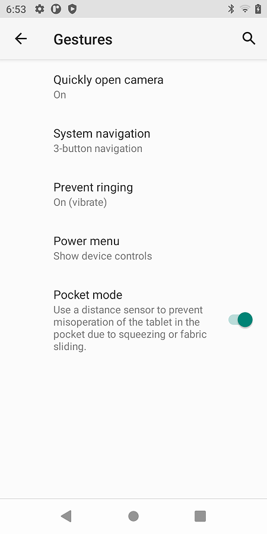
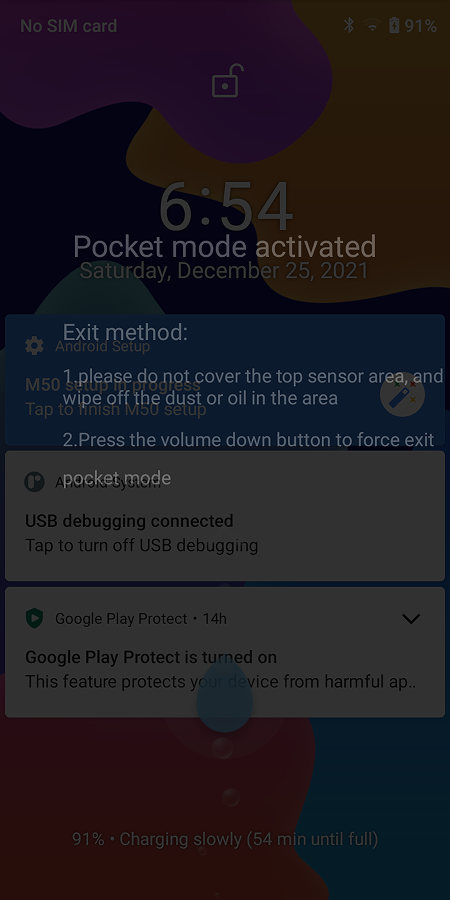
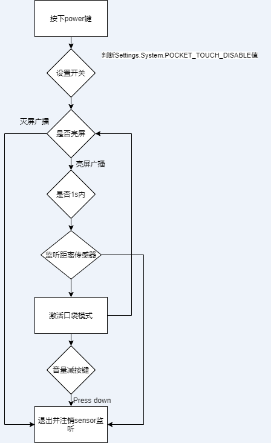

概述
本文主要讲解口袋模式功能实现。
参考
界面
[Summary]:
1.口袋模式说明:当触发双击唤醒或power键解锁操作，根据距离传感器检测的
数据判断为口袋，即弹出提示界面，用户无法进行点击，可通过音量减按键强行退出。
2.打开开关:setting-system-gestures-Pocket mode。
[Test Plan]:
1.打开Pocket mode开关，锁屏，将手机置于口袋，按power键或者双击唤醒，观察屏幕是否提示口袋模式已激活，
检查此时是否可操作屏幕。
1.设置界面

2.功能界面

软件实现
1、新增Settings全局变量
1.新增setting string变量：
--- a/frameworks/base/core/java/android/provider/Settings.java
+++ b/frameworks/base/core/java/android/provider/Settings.java
@@ -3055,6 +3055,8 @@ public final class Settings {
private static final ContentProviderHolder sProviderHolder =
new ContentProviderHolder(CONTENT_URI);
+ public static final String POCKET_TOUCH_DISABLE = "pocket_touch_disable";
+
@UnsupportedAppUsage
private static final NameValueCache sNameValueCache = new NameValueCache(
CONTENT_URI,
2.make update-api 后，自动更新此文件，检查确认正确后，跟代码一起提交即可。
--- a/frameworks/base/api/current.txt
+++ b/frameworks/base/api/current.txt
@@ -40815,6 +40815,7 @@ package android.provider {
field @Deprecated public static final String PARENTAL_CONTROL_ENABLED = "parental_control_enabled";
field @Deprecated public static final String PARENTAL_CONTROL_LAST_UPDATE = "parental_control_last_update";
field @Deprecated public static final String PARENTAL_CONTROL_REDIRECT_URL = "parental_control_redirect_url";
+ field public static final String POCKET_TOUCH_DISABLE = "pocket_touch_disable";
field @Deprecated public static final String RADIO_BLUETOOTH = "bluetooth";
field @Deprecated public static final String RADIO_CELL = "cell";
field @Deprecated public static final String RADIO_NFC = "nfc";
--- a/frameworks/base/non-updatable-api/current.txt
+++ b/frameworks/base/non-updatable-api/current.txt
@@ -38983,6 +38983,7 @@ package android.provider {
field @Deprecated public static final String PARENTAL_CONTROL_ENABLED = "parental_control_enabled";
field @Deprecated public static final String PARENTAL_CONTROL_LAST_UPDATE = "parental_control_last_update";
field @Deprecated public static final String PARENTAL_CONTROL_REDIRECT_URL = "parental_control_redirect_url";
+ field public static final String POCKET_TOUCH_DISABLE = "pocket_touch_disable";
field @Deprecated public static final String RADIO_BLUETOOTH = "bluetooth";
field @Deprecated public static final String RADIO_CELL = "cell";
field @Deprecated public static final String RADIO_NFC = "nfc";
2、新增Settings界面自定义SwitchPreference样式
1.新建SwitchPreference样式
--- a/vendor/mediatek/proprietary/packages/apps/MtkSettings/res/values-zh-rCN/strings.xml
+++ b/vendor/mediatek/proprietary/packages/apps/MtkSettings/res/values-zh-rCN/strings.xml
@@ -4965,8 +4965,13 @@
<string name = "selet_chargemode">选择充电模式</string>
<!-- [FEATURE]-Add-END by (qumy@paxsz.com), 2021/05/08 for add chargemode -->
- <!-- DoubleTapScreen setting title [CHAR LIMIT=NONE] -->
+ <!-- DoubleTapScreen setting title [CHAR LIMIT=NONE] -->
<string name="double_tap_awake_name"> 双击唤醒</string>
<!-- DoubleTapScreen setting summary [CHAR LIMIT=NONE] -->
- <string name="double_tap_awake_summary"> 双击唤醒状态</string>
+ <string name="double_tap_awake_summary">锁屏状态下的双击唤醒功能</string>
+
+ <!-- PocketMode setting title [CHAR LIMIT=NONE] -->
+ <string name="pocket_mode_name">口袋模式</string>
+ <!-- PocketMode setting summary [CHAR LIMIT=NONE] -->
+ <string name="pocket_mode_summary">利用距离感应器，防止手机在口袋中由于挤压或织物滑动引起的误操作</string>
</resources>
diff --git a/vendor/mediatek/proprietary/packages/apps/MtkSettings/res/values/strings.xml b/vendor/mediatek/proprietary/packages/apps/MtkSettings/res/values/strings.xml
index 978ad3c222a..1e78456d57c 100755
--- a/vendor/mediatek/proprietary/packages/apps/MtkSettings/res/values/strings.xml
+++ b/vendor/mediatek/proprietary/packages/apps/MtkSettings/res/values/strings.xml
@@ -12147,11 +12147,16 @@
<string name="cards_passes_setting_subtitle">To access things like your payment methods and boarding passes, press and hold the Power button.</string>
<!-- DoubleTapScreen setting title [CHAR LIMIT=NONE] -->
- <string name="double_tap_awake_name">Double Tap Screen</string>
+ <string name="double_tap_awake_name">Double tap screen</string>
<!-- DoubleTapScreen setting summary [CHAR LIMIT=NONE] -->
- <string name="double_tap_awake_summary">Double Tap Screen status</string>
+ <string name="double_tap_awake_summary">Double-tap wake-up function in locked screen state</string>
+ <!-- PocketMode setting title [CHAR LIMIT=NONE] -->
+ <string name="pocket_mode_name">Pocket mode</string>
+
+ <!-- PocketMode setting summary [CHAR LIMIT=NONE] -->
+ <string name="pocket_mode_summary">Use a distance sensor to prevent misoperation of the tablet in the pocket due to squeezing or fabric sliding.</string>
<!-- Title for RTT setting. [CHAR LIMIT=NONE] -->
<string name="rtt_settings_title"></string>
diff --git a/vendor/mediatek/proprietary/packages/apps/MtkSettings/res/xml/gestures.xml b/vendor/mediatek/proprietary/packages/apps/MtkSettings/res/xml/gestures.xml
index 3f3404630c1..5a9145595e5 100755
--- a/vendor/mediatek/proprietary/packages/apps/MtkSettings/res/xml/gestures.xml
+++ b/vendor/mediatek/proprietary/packages/apps/MtkSettings/res/xml/gestures.xml
@@ -92,4 +92,11 @@
android:summary="@string/double_tap_awake_summary"
settings:searchable="true"
settings:controller="com.android.settings.gestures.PaxDoubleTapAwakeGesturePreferenceController" />
+
+ <SwitchPreference
+ android:key="pocket_mode"
+ android:title="@string/pocket_mode_name"
+ android:summary="@string/pocket_mode_summary"
+ settings:searchable="true"
+ settings:controller="com.android.settings.gestures.PaxPocketModePreferenceController" />
</PreferenceScreen>
--- a/vendor/mediatek/proprietary/packages/apps/MtkSettings/src/com/android/settings/gestures/GesturesSettingPreferenceController.java
+++ b/vendor/mediatek/proprietary/packages/apps/MtkSettings/src/com/android/settings/gestures/GesturesSettingPreferenceController.java
@@ -82,6 +82,7 @@ public class GesturesSettingPreferenceController extends BasePreferenceControlle
.setConfig(ambientDisplayConfiguration));
controllers.add(new PreventRingingParentPreferenceController(context, FAKE_PREF_KEY));
controllers.add(new PaxDoubleTapAwakeGesturePreferenceController(context));
+ controllers.add(new PaxPocketModePreferenceController(context));
return controllers;
}
2.新增Settings界面Controller，这里点击界面开关
Pocket mode后，将设置全局变量Settings.System.POCKET_TOUCH_DISABLE的值为1或者0，例子如下：
PAYTABLETM8:/ # dumpsys settings | grep pocket_touch_disable
_id:30 name:pocket_touch_disable pkg:android value:1 default:1 defaultSystemSet:true
PAYTABLETM8:/ # dumpsys settings | grep pocket_touch_disable
_id:77 name:pocket_touch_disable pkg:com.android.settings value:0 default:0 defaultSystemSet:true
1970-01-06 19:19:28 update pocket_touch_disable
代码如下：
/*
* Copyright (C) 2016 The Android Open Source Project
*
* Licensed under the Apache License, Version 2.0 (the "License");
* you may not use this file except in compliance with the License.
* You may obtain a copy of the License at
*
* http://www.apache.org/licenses/LICENSE-2.0
*
* Unless required by applicable law or agreed to in writing, software
* distributed under the License is distributed on an "AS IS" BASIS,
* WITHOUT WARRANTIES OR CONDITIONS OF ANY KIND, either express or implied.
* See the License for the specific language governing permissions and
* limitations under the License.
*/
package com.android.settings.gestures;
import android.content.Context;
import android.provider.Settings;
import androidx.preference.Preference;
import androidx.preference.SwitchPreference;
import com.android.settingslib.Utils;
import com.android.settings.core.BasePreferenceController;
import android.util.Log;
import java.io.IOException;
import android.os.SystemProperties;
public class PaxPocketModePreferenceController extends BasePreferenceController
implements Preference.OnPreferenceChangeListener{
private static final String KEY_POCKET_MODE = "pocket_mode";
private static final String TAG = "PaxPocketModePreferenceController";
public PaxPocketModePreferenceController(Context context) {
super(context,KEY_POCKET_MODE);
Log.d(TAG,"start");
}
@Override
public String getPreferenceKey() {
return KEY_POCKET_MODE;
}
@Override
public void updateState(Preference preference) {
Log.d(TAG,"updateState");
if (!(preference instanceof SwitchPreference)) {
return;
}
((SwitchPreference) preference).setChecked(isProximityScreenEnabled());
}
boolean isProximityScreenEnabled() {
return Settings.System.getInt(mContext.getContentResolver(),
Settings.System.POCKET_TOUCH_DISABLE,
0) == 1;
}
@Override
public boolean onPreferenceChange(Preference preference, Object newValue) {
Log.d(TAG,"onPreferenceChange");
boolean powerEnabled = (Boolean) newValue;
Log.d(TAG,"onPreferenceChange powerEnabled = "+powerEnabled);
try{
if(powerEnabled){
Settings.System.putInt(mContext.getContentResolver(),
Settings.System.POCKET_TOUCH_DISABLE,1);
}
else {
Settings.System.putInt(mContext.getContentResolver(),
Settings.System.POCKET_TOUCH_DISABLE,0);
}
}catch (Exception e) {
e.printStackTrace();
}
return true;
}
public int getAvailabilityStatus(){
return AVAILABLE;
}
}
3.开关默认值设定，首先创建一个int型资源，比如下面就是默认打开。
--- a/paxdroid/frameworks/base/core/res/res/values/config.xml
+++ b/paxdroid/frameworks/base/core/res/res/values/config.xml
@@ -41,5 +41,8 @@
<!-- paxsz@ 2019.10.17 def control device reboot every 24 hours -->
<integer name="def_reboot_every_24_hours" translatable="false">0</integer>
+ <!-- defualt pocket mode value -->
+ <integer name="def_pax_pocket_mode_enabled">1</integer>
+
<string name="def_use_pax_theme" translatable="false">TRUE</string>
</resources>
diff --git a/paxdroid/frameworks/base/core/res/res/values/symbols.xml b/paxdroid/frameworks/base/core/res/res/values/symbols.xml
index 2bb5409d957..5945d534847 100755
--- a/paxdroid/frameworks/base/core/res/res/values/symbols.xml
+++ b/paxdroid/frameworks/base/core/res/res/values/symbols.xml
@@ -38,4 +38,6 @@
<java-symbol type="string" name="def_use_pax_theme" />
+ <java-symbol type="integer" name="def_pax_pocket_mode_enabled" />
+
paxdroid/frameworks/base/core/java/android/provider/PaxSettings.java然后load该资源，并初始化Settings.System.POCKET_TOUCH_DISABLE变量值:
--- a/paxdroid/frameworks/base/core/java/android/provider/PaxSettings.java
+++ b/paxdroid/frameworks/base/core/java/android/provider/PaxSettings.java
@@ -207,7 +207,10 @@ public final class PaxSettings {
loadStringSetting(stmt, PaxSettings.System.USE_PAX_THEME,
R.string.def_use_pax_theme);
//[FEATURE]-Add-END
-
+ //[FEATURE]-Add-BEGIN by (wugangnan@paxsz.com), 2021/12/07,for default pocket mode enabled
+ loadIntegerSetting(stmt, Settings.System.POCKET_TOUCH_DISABLE,
+ R.integer.def_pax_pocket_mode_enabled);
+ //[FEATURE]-Add-END
3.新增口袋模式view
1.新建一个view。
diff --git a/frameworks/base/core/res/res/layout/pocket_touch_disable.xml b/frameworks/base/core/res/res/layout/pocket_touch_disable.xml
new file mode 100755
index 00000000000..7a9af472af4
--- /dev/null
+++ b/frameworks/base/core/res/res/layout/pocket_touch_disable.xml
@@ -0,0 +1,43 @@
+<?xml version="1.0" encoding="utf-8"?>
+<LinearLayout xmlns:android="http://schemas.android.com/apk/res/android"
+ android:layout_width="match_parent"
+ android:layout_height="2160px"
+ android:background="#cc000000"
+ android:orientation="vertical">
+
+ <TextView
+ android:layout_marginTop="360px"
+ android:layout_width="wrap_content"
+ android:layout_height="wrap_content"
+ android:layout_gravity="center_horizontal"
+ android:text="@string/oos_ptd_title"
+ android:textColor="#4cffffff"
+ android:textSize="48px" />
+
+ <TextView
+ android:layout_width="wrap_content"
+ android:layout_height="wrap_content"
+ android:paddingTop="80px"
+ android:text="@string/oos_ptd_exit_mode"
+ android:textColor="#4cffffff"
+ android:layout_marginLeft="100px"
+ android:textSize="36px" />
+ <TextView
+ android:layout_width="wrap_content"
+ android:layout_height="wrap_content"
+ android:paddingTop="26px"
+ android:textSize="30px"
+ android:textColor="#4cffffff"
+ android:layout_marginLeft="100px"
+ android:text="@string/oos_ptd_notice1"
+ />
+ <TextView
+ android:layout_width="wrap_content"
+ android:layout_height="wrap_content"
+ android:paddingTop="26px"
+ android:textSize="30px"
+ android:textColor="#4cffffff"
+ android:layout_marginLeft="100px"
+ android:text="@string/oos_ptd_notice2"
+ android:lineSpacingExtra="26px"/>
+</LinearLayout>
增加layout
--- a/frameworks/base/core/res/res/values/symbols.xml
+++ b/frameworks/base/core/res/res/values/symbols.xml
@@ -4052,4 +4052,5 @@
<java-symbol type="string" name="config_pdp_reject_multi_conn_to_same_pdn_not_allowed" />
<java-symbol type="array" name="config_notificationMsgPkgsAllowedAsConvos" />
+ <java-symbol type="layout" name="pocket_touch_disable" />
</resources>
3.PhoneWindowManager增加具体功能实现
1.增加sensor类。
--- a/frameworks/base/services/core/java/com/android/server/policy/PhoneWindowManager.java
+++ b/frameworks/base/services/core/java/com/android/server/policy/PhoneWindowManager.java
@@ -233,6 +233,17 @@ import java.util.List;
import android.content.ComponentName;
import java.util.Queue;
import java.util.concurrent.LinkedBlockingQueue;
+
+//[NEW FEATURE]-BEGIN by wugangnan@paxsz.com 2021-10-02, for Pocket mode
+import android.hardware.Sensor;
+import android.hardware.SensorEvent;
+import android.hardware.SensorEventListener;
+import android.hardware.SensorManager;
+import android.graphics.PixelFormat;
+import android.view.Gravity;
+//[NEW FEATURE]-END by wugangnan@paxsz.com 2021-10-02, for Pocket mode
2.增加各种接口，解释如下：
//[NEW FEATURE]-BEGIN by wugangnan@paxsz.com 2021-10-02, for Pocket mode
private static final long ALS_PS_DELAY = 1000;
private boolean mProximitySensorEnabled;
private boolean mProximityScreenShown;
private long mScreenOnTime;
private SensorManager mSensorManager;
private Sensor mProximitySensor;
private View mProximityView;
private WindowManager.LayoutParams mProximityParams;
1.读取Settings.System.POCKET_TOUCH_DISABLE变量，判断设置开关是否打开
boolean isProximityScreenEnabled() {
Log.i(TAG, "isProximityScreenEnabled.");
return Settings.System.getInt(mContext.getContentResolver(),
Settings.System.POCKET_TOUCH_DISABLE,
0) == 1;
}
2.传参ture，注册距离传感器监听，否则注销和隐藏口袋模式界面。
private void setProximitySensorEnabled(boolean enable) {
Log.i(TAG, "setProximitySensorEnabled." + enable);
if (enable) {
if (!mProximitySensorEnabled) {
mProximitySensorEnabled = true;
mSensorManager.registerListener(mProximitySensorListener, mProximitySensor,
SensorManager.SENSOR_DELAY_UI, mHandler);
mScreenOnTime = SystemClock.uptimeMillis();
}
} else {
if (mProximitySensorEnabled) {
mProximitySensorEnabled = false;
hideProximityScreen();
mSensorManager.unregisterListener(mProximitySensorListener);
}
}
}
3.显示口袋模式界面
private void showProximityScreen() {
Log.i(TAG, "showProximityScreen." + mProximityScreenShown);
if (!mProximityScreenShown) {
if (mProximityView == null) {
mProximityView = View.inflate(mContext,
com.android.internal.R.layout.pocket_touch_disable, null);
mProximityView.setSystemUiVisibility(View.STATUS_BAR_DISABLE_EXPAND);
mProximityView.setFocusable(true);
mProximityView.setFocusableInTouchMode(true);
View.OnKeyListener listener = new View.OnKeyListener() {
public boolean onKey(View v, int keyCode, KeyEvent event) {
// capture all key event
return true;
}
};
mProximityView.setOnKeyListener(listener);
mProximityParams = new WindowManager.LayoutParams(
WindowManager.LayoutParams.MATCH_PARENT,
WindowManager.LayoutParams.MATCH_PARENT);
mProximityParams.type = WindowManager.LayoutParams.TYPE_BOOT_PROGRESS;
mProximityParams.flags = WindowManager.LayoutParams.FLAG_FULLSCREEN
| WindowManager.LayoutParams.FLAG_LAYOUT_IN_SCREEN | WindowManager.LayoutParams.FLAG_LAYOUT_NO_LIMITS | WindowManager.LayoutParams.FLAG_NOT_FOCUSABLE;
mProximityParams.format = PixelFormat.TRANSLUCENT;
mProximityParams.gravity = Gravity.END | Gravity.TOP;
mProximityParams.setTitle("PTD view");
//mProximityParams.x = getResources().getDisplayMetrics().widthPixels/2;
//mProximityParams.y = 100;
}
WindowManager wm = (WindowManager) mContext.getSystemService(Context.WINDOW_SERVICE);
wm.addView(mProximityView, mProximityParams);
mProximityScreenShown = true;
mHandler.removeCallbacks(mPsRunnable);
}
}
4.隐藏口袋模式界面
private void hideProximityScreen() {
Log.i(TAG, "hideProximityScreen.");
if (mProximityScreenShown) {
WindowManager wm = (WindowManager) mContext.getSystemService(Context.WINDOW_SERVICE);
wm.removeView(mProximityView);
mProximityView = null;
mProximityParams = null;
mProximityScreenShown = false;
}
}
5.Runnable定时器，亮屏后延时1s启动，也就是说口袋模式有效时间为亮屏后1s。
public Runnable mPsRunnable = new Runnable() {
@Override
public void run() {
setProximitySensorEnabled(false);
}
};
6.距离传感器监听函数，检测到手靠近则激活口袋模式
private final SensorEventListener mProximitySensorListener = new SensorEventListener() {
@Override
public void onSensorChanged(SensorEvent event) {
boolean isNear = event.values[0] == 0.0f;
long time = SystemClock.uptimeMillis();
Log.i(TAG, "mProximitySensorListener." + mProximityScreenShown);
if (!mProximityScreenShown) {
if (isNear) {
showProximityScreen();
}
} else {
if (!isNear) {
setProximitySensorEnabled(false);
}
}
}
@Override
public void onAccuracyChanged(Sensor sensor, int accuracy) {
// Not used.
}
};
7.激活口袋模式后，音量减按下则隐藏画面，注销监听。
private void ProximityScreenVolumeDownKeyTriggered(){
if (mScreenshotChordVolumeDownKeyTriggered && !mA11yShortcutChordVolumeUpKeyTriggered) {
if (mProximityScreenShown) {
setProximitySensorEnabled(false);
}
}
}
//[NEW FEATURE]-END by wugangnan@paxsz.com 2021-10-02, for Pocket mode
2.新增sensor监听
@Override
public void init(Context context, IWindowManager windowManager,
WindowManagerFuncs windowManagerFuncs) {
1.获取ProximitySensor实时数据。
//[NEW FEATURE]-BEGIN by wugangnan@paxsz.com 2021-10-02, for Pocket mode read the value of the distance sensor
mSensorManager = (SensorManager) context.getSystemService(Context.SENSOR_SERVICE);
mProximitySensor = mSensorManager.getDefaultSensor(Sensor.TYPE_PROXIMITY);
//[NEW FEATURE]-END by wugangnan@paxsz.com 2021-10-02, for Pocket mode read the value of the distance sensor
2.注册一个广播接收器
//[NEW FEATURE]-BEGIN by wugangnan@paxsz.com 2021-10-02, for Pocket mode register a broadcast when screen is on or off
IntentFilter turningOnScreenfilter = new IntentFilter();
turningOnScreenfilter.addAction(Intent.ACTION_SCREEN_OFF); //为BroadcastReceiver指定action，使之用于接收同action的广播
turningOnScreenfilter.addAction(Intent.ACTION_SCREEN_ON);
context.registerReceiver(mBatInfoReceiver, turningOnScreenfilter);
//[NEW FEATURE]-END by wugangnan@paxsz.com 2021-10-02, for Pocket mode register a broadcast when screen is on or off
}
重写广播onReceive方法，监听亮灭屏：
//[NEW FEATURE]-BEGIN by wugangnan@paxsz.com 2021-10-02, for Pocket mode receive broadcast when screen is on or off
BroadcastReceiver mBatInfoReceiver = new BroadcastReceiver() {
@Override
public void onReceive(final Context context, final Intent intent) {
final String action = intent.getAction();
1.亮屏时，首先判断开关是否打开。
if(Intent.ACTION_SCREEN_ON.equals(action)){
if (isProximityScreenEnabled()) {
setProximitySensorEnabled(true); 2.注册距离传感器监听
mHandler.postDelayed(mPsRunnable, ALS_PS_DELAY); 3.延时1秒后调用此Runnable对象
}
}else if(Intent.ACTION_SCREEN_OFF.equals(action)){
if (isProximityScreenEnabled()) setProximitySensorEnabled(false);
}
}
};
//[NEW FEATURE]-END by wugangnan@paxsz.com 2021-10-02, for Pocket mode receive broadcast when screen is on or off
3.增加音量减按键退出功能
private void ProximityScreenVolumeDownKeyTriggered(){
if (mScreenshotChordVolumeDownKeyTriggered && !mA11yShortcutChordVolumeUpKeyTriggered) {
if (mProximityScreenShown) {
setProximitySensorEnabled(false); 音量减按下则隐藏画面，注销监听。
}
}
}
@Override
public int interceptKeyBeforeQueueing(KeyEvent event, int policyFlags) {
// Handle special keys.
switch (keyCode) {
case KeyEvent.KEYCODE_VOLUME_MUTE: {
if (keyCode == KeyEvent.KEYCODE_VOLUME_DOWN) {
if (down) {
// Any activity on the vol down button stops the ringer toggle shortcut
cancelPendingRingerToggleChordAction();
if (interactive && !mScreenshotChordVolumeDownKeyTriggered
&& (event.getFlags() & KeyEvent.FLAG_FALLBACK) == 0) {
mScreenshotChordVolumeDownKeyTriggered = true;
mScreenshotChordVolumeDownKeyTime = event.getDownTime();
mScreenshotChordVolumeDownKeyConsumed = false;
//[NEW FEATURE]-BEGIN by wugangnan@paxsz.com 2021-10-02, for Pocket mode
ProximityScreenVolumeDownKeyTriggered();
//[NEW FEATURE]-END by wugangnan@paxsz.com 2021-10-02, for Pocket mode
cancelPendingPowerKeyAction();
interceptScreenshotChord();
interceptAccessibilityShortcutChord();
}
}
}
4.整体程序流程
软件流程如下：
* context.registerReceiver(mBatInfoReceiver, turningOnScreenfilter); 注册亮灭屏广播监听
├── onReceive(final Context context, final Intent intent) { 重写onReceive方法
├── if(Intent.ACTION_SCREEN_ON.equals(action)){ 亮屏
├── if (isProximityScreenEnabled()) { 判断设置开关是否打开
├── setProximitySensorEnabled(true); 注册距离传感器监听
│ └── mProximitySensorListener = new SensorEventListener() 距离传感器监听
│ ├── isNear = event.values[0] == 0.0f; 读取距离数据
│ └── if (!mProximityScreenShown) { //未显示口袋模式界面
│ ├── if (isNear) { 触发近距
│ │ └── showProximityScreen(); 显示口袋模式界面
│ │ ├── mProximityScreenShown = true; 设置显示flag为ture
│ │ └── mHandler.removeCallbacks(mPsRunnable); 关闭定时器
│ └── if (!isNear) {
│ └── setProximitySensorEnabled(false); 注销距感监听
│ ├── mSensorManager.unregisterListener(mProximitySensorListener); 注销距感监听
│ └── hideProximityScreen(); 隐藏口袋模式界面
└── else if(Intent.ACTION_SCREEN_OFF.equals(action)){ 灭屏
└── if (isProximityScreenEnabled())
└── setProximitySensorEnabled(false); 注销距感监听，隐藏口袋模式界面
流程图如下：
